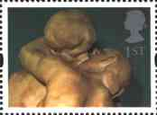
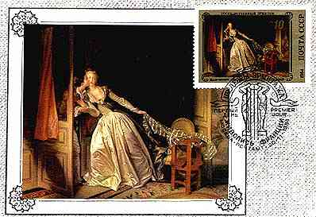
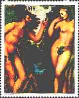
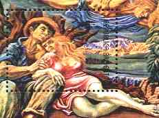
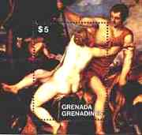
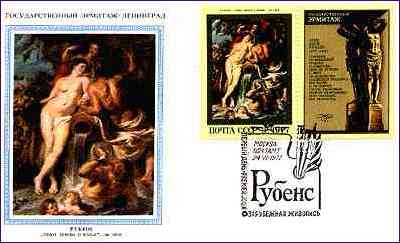
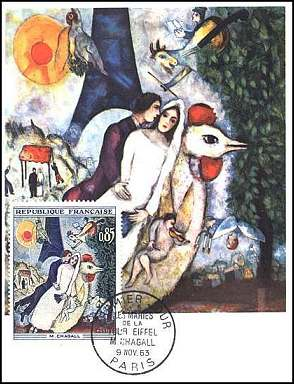

Dedicated
to the 250th birth anniversary |
| Yet, to be loved, what happiness!
|
 |
What happiness, ye gods, to love!  |

PROXIMITY OF THE BELOVED ONE
| I think of thee, whene'er the sun his beams O'er ocean flings; I think of thee, whene'er the moonlight gleams In silv'ry springs. I see thee, when upon the distant ridge The dust awakes; At midnight's hour, when on the fragile bridge The wanderer quakes. I hear thee, when yon billows rise on high, With murmur deep. To tread the silent grove oft wander I, When all's asleep. I'm near thee, though thou far away mayst be Thou, too, art near! The sun then sets, the stars soon lighten me. Would thou wert here! |
 |
 |
 |
 |
 |
NAEHE DES GELIEBTEN
|
Ich denke dein, wenn mir der Sonne
Schimmer  |
Ich sehe dich, wenn auf dem fernen
Wege Der Staub sich hebt; In tiefer Nacht, wenn auf dem schmalen Stege Der Wandrer bebt. Ich hoere dich, wenn dort mit dumpfem Rauschen Die Welle steigt. Im stillen Haine geh' ich oft zu lauschen, Wenn alles schweigt. Ich bin bei dir, du seist auch noch so ferne, |
 |
 |
All poetry on this
page by: Johann Wolfgang von Goethe
(1749-1832)
Background image: Birth of Venus (detail), by Sandro
Botticelli
(1445 - 1510)